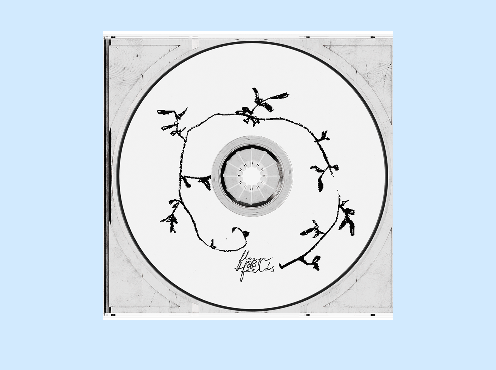
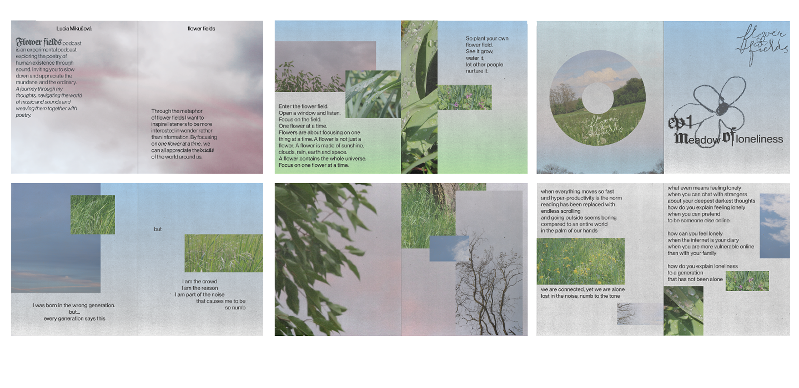
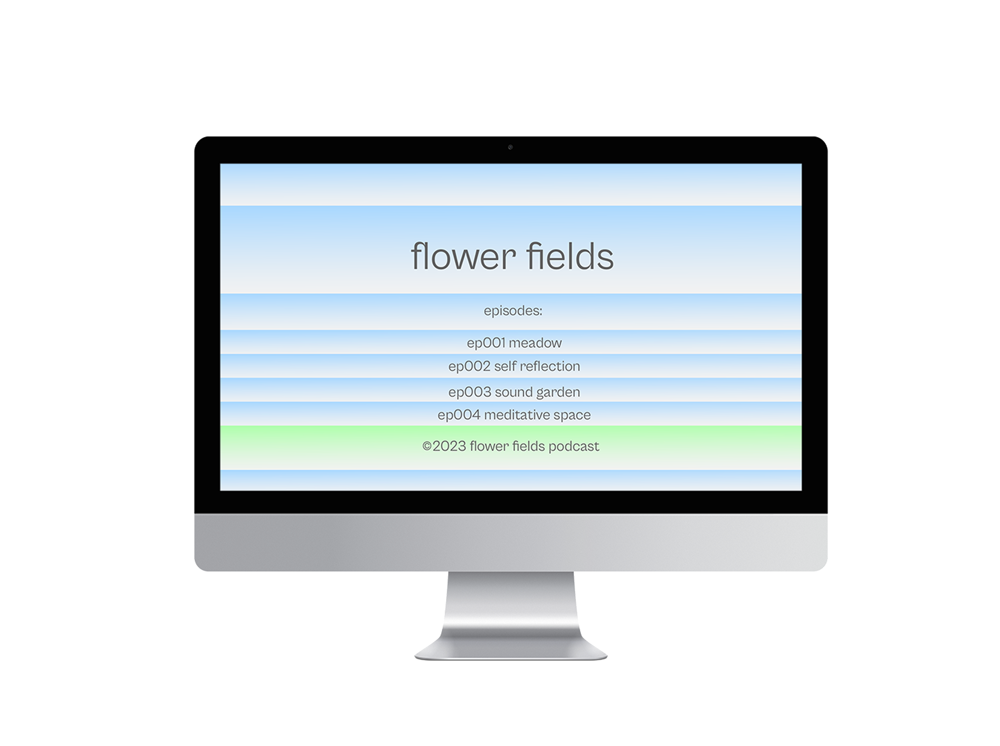
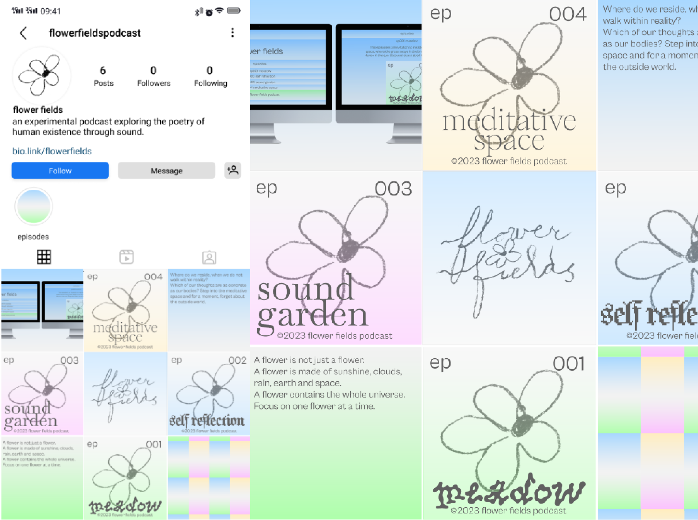
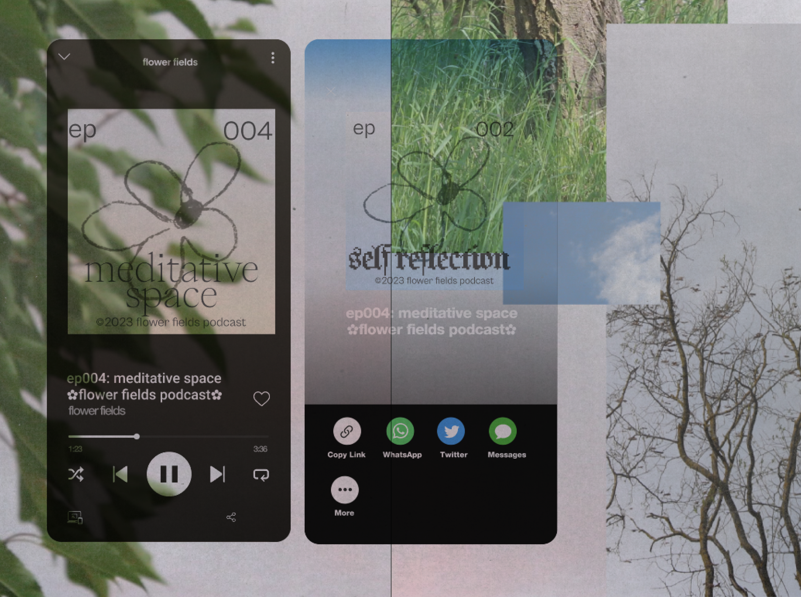

Flower Fields is a fictional podcast focused on experimenting
with poetry and sound. As part of the project, a concept for four
episodes was developed, one of which was written, recorded,
and produced as a preview of the format and atmosphere
of the entire series.
Part of the concept is a simple website design as well as short
video/ animation for the first episode. Another part of the project
is a zine, using stills from the video itself and poetry.




